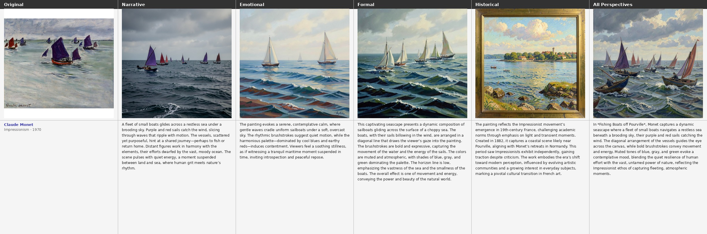
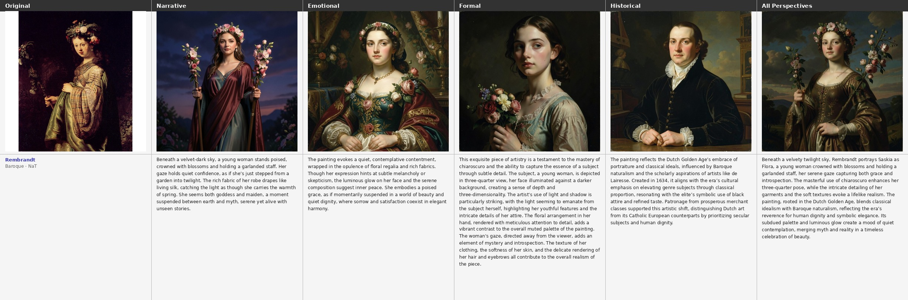
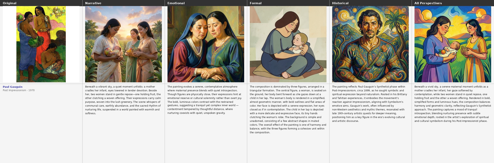
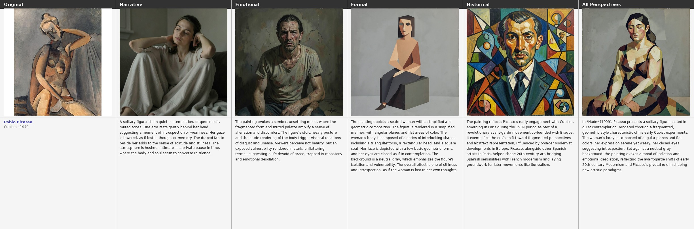
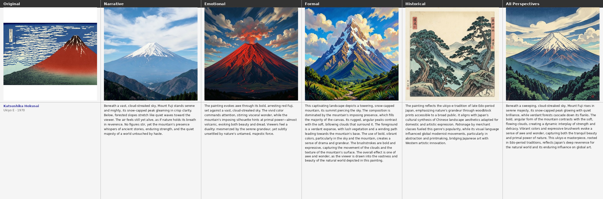
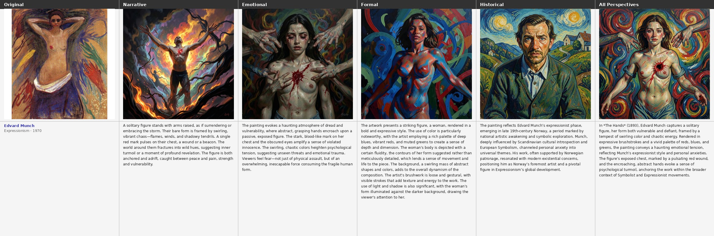

Overview
MMArt is a large-scale dataset of 74,234 WikiArt paintings, each annotated with four independently generated interpretive perspectives — Narrative, Formal, Emotional, Historical — plus a harmonized unified caption. This website provides supplementary materials for the paper; see the paper for full methodology, experiments, and results.
Dataset at a Glance
The Four Perspectives
Each painting is annotated with four independently generated, specialist-model captions — one per interpretive dimension — plus a synthesized unified caption (U). Full prompt templates for each are in S1.
Narrative & Scene
Depicted entities, figures, scene composition, and story.
Qwen3-VL-8B-InstructFormal Analysis
Composition, brushwork, palette, light and shadow.
GalleryGPT (LLaVA-7B + LoRA)Emotional Response
Mood, atmosphere, and psychological tone.
Qwen3-VL-8B + ArtEmis-v2Historical Context
Art-historical meaning, symbolism, and cultural codes.
Qwen3-VL-8B + RAGDataset Access
Data Schema
{
"image_id": "Romanticism/delacroix_liberty-leading-the-people.jpg",
"title": "liberty-leading-the-people",
"artist": "delacroix",
"style": "romanticism",
"date": "1830",
"e_narrative": "A triumphant woman strides forward...",
"e_formal": "The diagonal composition surges from lower left...",
"e_emotional": "The painting radiates fierce exhilaration...",
"e_historical": "Painted in the wake of the July Revolution...",
"e_unified": "Liberty Leading the People captures the explosive...",
"dominant_emotion": "awe",
"n_perspectives": 4
}
Citation
@inproceedings{wang2026mmart,
title = {MMArt: A Multi-Perspective Multimodal Dataset for Visual Art Understanding},
author = {Wang, Shuai and others},
booktitle = {Under submission to ACM International Conference on Multimedia},
year = {2026},
}
S1 — Full Prompt Templates
The paper states: "Full prompt templates for all five generation steps are provided in the supplementary website." (§3.2). All prompts are reproduced verbatim below. Click any block to expand.
S1.1 Narrative Perspective (πnarr)
You are an art interpretation assistant.
Given the painting titled "{title}" by {artist}, write a detailed
**narrative and scene interpretation** — what is happening or might be
happening in the scene. Focus on storytelling, implied action,
relationships between figures, and atmosphere.
Guidelines:
- Length: ~80 words
- Tone: descriptive and interpretive, not technical
- Avoid: artistic terms (e.g. "chiaroscuro", "composition"),
historical facts, or the artist's name
Write the narrative and scene interpretation:
S1.2 Formal Perspective (πform)
Compose a short paragraph of formal analysis for this painting. Describe the composition, use of color and light, brushwork or technique, spatial organisation, and any notable visual effects. Focus purely on how the painting is made, not what it depicts or its historical context. Length: ~80 words.
S1.3 Emotional Perspective (πemot)
Variant A — With ARTEMIS-v2 grounding (99.0% of paintings)
You are an art interpretation assistant.
Look at the painting "{title}" by {artist}.
Real viewers responded to this painting with the following emotional reactions:
{utterances}
The most common emotional response was: {dominant_emotion}.
Using both what you see in the painting and these viewer reactions as grounding,
write a coherent ~80-word **emotional interpretation** — the mood it evokes,
the atmosphere, and the psychological tone.
Synthesize the visual qualities of the painting with the viewer reactions
into a unified emotional description.
Write in third person (e.g. "The painting evokes..."), not first person.
Write the emotional interpretation:
Variant B — Vision only (fallback, 1.0%)
You are an art interpretation assistant.
Given the painting titled "{title}" by {artist}, write an ~80-word
**emotional interpretation** — the mood it evokes, the atmosphere, and
the psychological tone it creates in a viewer.
Focus on emotional and affective qualities only.
Avoid describing what is depicted or analysing technique.
Write in third person (e.g. "The painting evokes...").
Write the emotional interpretation:
S1.4 Historical Perspective (πhist)
Variant A — With retrieved art-history context (similarity ≥ 0.25)
You are an art historian.
The following context has been retrieved from an art knowledge base about
"{title}" by {artist} ({style}, {date}):
{context}
Using the retrieved context and your knowledge of art history,
write a coherent ~80-word **historical and cultural interpretation** of this
painting — covering the artistic movement, historical period, cultural setting,
and any relevant influences, patronage, or significance.
Guidelines:
- Focus on history and cultural context only
- Do NOT describe visual elements, colours, brushwork, or composition
- Do NOT speculate on specific details not supported by the context or
established art history
- Write in third person (e.g. "The painting reflects...")
Write the historical interpretation:
Variant B — No RAG (fallback when similarity < 0.25)
You are an art historian.
Write a ~80-word **historical and cultural interpretation** of "{title}"
by {artist} ({style}, {date}) — covering the artistic movement, historical
period, cultural setting, and any relevant influences or significance.
Guidelines:
- Focus on history and cultural context only
- Do NOT describe visual elements, colours, brushwork, or composition
- If you are uncertain about specific facts for this artist or work,
speak at the level of the movement and period
- Write in third person (e.g. "The painting reflects...")
Write the historical interpretation:
S1.5 Unified Caption ( πunif)
System
You are an art writer producing unified painting descriptions for an academic dataset. Given four analytical perspectives on a painting, write a single unified description of approximately 150 words that integrates all four perspectives into coherent prose. Rules: - Do not use section headers or bullet points - Do not start with "This painting" or "The painting" - Write in present tense, third person - Preserve specific details from each perspective: what is depicted, visual structure and technique, emotional atmosphere, and art-historical context - Output only the description, nothing else
User
Painting: "{title}" by {artist}
[Narrative]
{e_narrative text}
[Formal]
{e_formal text}
[Emotional]
{e_emotional text}
[Historical]
{e_historical text}
Write a unified ~150-word description integrating all perspectives above.
S2 — Additional Implementation Details
The main paper reports max_tokens=256 with default decoding temperature for
VLM perspectives. The following parameters were omitted due to space constraints.
Text-only LLM Generation (Qwen3-8B via vLLM)
| Parameter | Phase 1 — Synthesis | Phase 4 — Unified |
|---|---|---|
| Temperature | 0.3 | 0.3 |
| Top-P | 0.9 | 0.9 |
| Max tokens | 200 | 250 |
| Repetition penalty | 1.05 | 1.05 |
| Dtype | bfloat16 | bfloat16 |
| Batch size | 512 | 64 |
| Chain-of-thought | disabled | disabled |
Image Generation (Phase 2)
| Model | Steps | Guidance Scale | Gen. Res. | Output Res. |
|---|---|---|---|---|
| FLUX.2-Klein-4B | 4 | 1.0 | 1024×1024 | 512×512 |
| Qwen-Image-2512 | 25 | 4.0 (true CFG) | 1024×1024 | 512×512 |
Qwen-Image uses negative prompt: "blurry, low quality, deformed, ugly, text, watermark, signature, extra limbs, bad anatomy". Downsampling via Lanczos. Seed: 42.
Shared vLLM Infrastructure
| Parameter | Value |
|---|---|
max_model_len | 4096 tokens |
gpu_memory_utilization | 0.85 |
| Vision image range | min 256×28², max 1280×28² pixels |
| Random seed | 42 |
S3 — RAG Construction (Historical Perspective)
The main paper states that the top-5 context documents are retrieved via embedding ranking. The complete retrieval pipeline is as follows.
Chunk Index
- Embedding model:
sentence-transformers/all-MiniLM-L6-v2(384-dim, L2-normalised) - Chunking: sliding window — 1,000 tokens per chunk, 100-token stride over Wikipedia art pages
- Index: binary embedding matrix + text key-value store
Retrieval at Inference
A query string is constructed from title, artist, style, and date, then:
- Embed with local sentence-transformer (~2 ms on CPU)
- Cosine similarity vs. all chunks (L2-normalised dot product)
- If
max_similarity < 0.25→ fall back to no-RAG prompt (Variant B) - Otherwise return top-5 chunks as
{context}
| Parameter | Value |
|---|---|
| Embedding model | sentence-transformers/all-MiniLM-L6-v2 |
| Embedding dim | 384 |
| Similarity metric | Cosine (L2-normalised dot product) |
| Similarity threshold | 0.25 |
| Top-k chunks | 3 |
S4 — Quality Evaluation: LLM-as-Judge Prompt
The paper reports judge scores (Table 3) and states the full prompt is in the supplementary. Judge model: google/gemma-3-27b-it (temperature 0.1, max tokens 150, bfloat16).
System Prompt
You are an expert art critic evaluating AI-generated art descriptions. You will be shown a painting and one perspective description. Rate it on three dimensions. Respond ONLY with valid JSON, no other text.
User Prompt Template
Painting metadata: Artist={artist}, Style={style}, Date={date}
Perspective type: {label}
Expected focus: {focus_desc}
Description to evaluate:
"""{perspective_text}"""
Rate this description on a scale of 1–5 for each dimension:
- perspective_fidelity: Does the text genuinely focus on {label} aspects?
(1=wrong focus, 5=excellent focus)
- factual_accuracy: Is the content factually correct about this painting?
(1=many errors, 5=accurate)
- depth: Does it provide substantive detail beyond generic description?
(1=generic, 5=highly specific)
Respond with ONLY this JSON:
{"perspective_fidelity": <1-5>, "factual_accuracy": <1-5>, "depth": <1-5>, "reasoning": "<one sentence>"}
Expected Focus per Perspective
| Perspective | Expected focus passed to judge |
|---|---|
| Narrative | the depicted subjects, scenes, narrative elements, and actions |
| Formal | composition, palette, brushwork, technique, and visual structure |
| Emotional | mood, emotional atmosphere, and affective qualities the work evokes |
| Historical | art movement, historical period, cultural context, and artist's style |
| Unified | an integrated view combining narrative, formal, emotional, and historical aspects |
S5 — Regeneration Experiment: Qualitative Examples
Each example shows the original painting alongside regenerations under five perspective conditions. The synthesized ~80-word caption used as the image-generation prompt is shown beneath each image. Model: FLUX.2-Klein.

The loose brushwork and coastal atmosphere are partially recovered under N and E, but the Formal description (F) best preserves the painting's hazy light and compositional structure. NFEH produces the most faithful reconstruction, capturing both style and scene.

The portrait character is strongly recovered under F (chiaroscuro, three-quarter pose) and NFEH. The Historical perspective (H) drifts toward a generic Dutch Golden Age portrait, while E captures the contemplative tone. NFEH integrates all cues into the closest match.

The Tahitian palette and flat figure arrangement are visible across all conditions, but N focuses on the figures, F captures the colour planes and composition, and H surfaces the Primitivism context. NFEH combines all signals into the richest and most characteristic result.

Cubist fragmentation is the hardest style to recover from text alone. N and E produce conventional figurative paintings; F partially recovers the geometric faceting. NFEH integrates formal vocabulary with historical context (early Cubism, Braque influence) for the most stylistically accurate result.

The flat graphic style and iconic red Fuji silhouette are consistently recovered across all conditions — this style is highly distinctive in text. The main gain from NFEH is in compositional accuracy (cloud placement, layered planes) and the characteristic woodblock colour palette.

The psychologically charged atmosphere is strongest in E, which captures the dread and vulnerability of the figure. F recovers the dynamic figure-ground composition, while H contextualises the work within Munch's Expressionist symbolism. NFEH produces the most complete result, combining affective tone with compositional and historical signals.
All composites generated with FLUX.2-Klein-4B (4 steps, guidance scale 1.0, seed 42). Full set of 1,000 composites × 2 models available in the dataset release.
S6 — Per-Style Analysis
The figures below break down reconstruction and retrieval results by the 20 WikiArt styles in the 1,000-painting benchmark sample — supplementary to the paper's aggregated numbers.
Retrieval: Narrative vs. Unified by Style
U outperforms N for styles where cultural and historical context matters most — Cubism (+12%), Art Nouveau (+14%), Ukiyo-e (+8%), Early Renaissance (+8%). N dominates for styles with strong visual identity — Impressionism (+18%), Baroque (+16%), Romanticism (+12%).

Retrieval Heatmap: All 10 Conditions × 20 Styles
The H column is near-zero across all styles. Pop Art is consistently easiest to retrieve; Abstract Expressionism is hardest.

Regeneration CLIP: Single Perspectives × 20 Styles
Formal (F) dominates CLIP similarity for most styles. Exception: Ukiyo-e achieves its highest CLIP score with Historical (H = 0.765), where cultural context uniquely encodes the woodblock aesthetic.